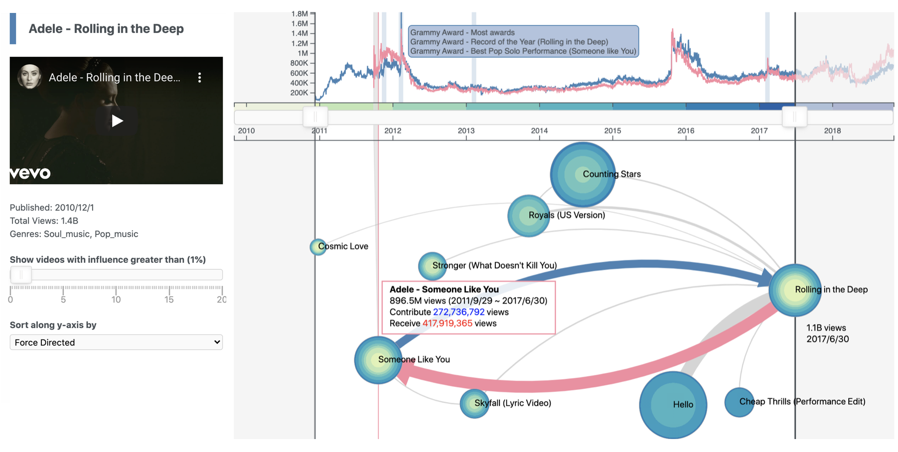

<div class="row">
  <!-- <div class="col-lg-12 text-xs-center">
    <h3 class="section-heading">Education</h3>
  </div> -->
  <div class="col-lg-12">
    <div style="padding: 5px 20px">
      I am a PhD candidate at <a href="http://cm.cecs.anu.edu.au/">Computational Media Lab.</a>, ANU College of Engineering and Computer Science,
      under the supervision of <a href="http://users.cecs.anu.edu.au/~xlx/">Lexing Xie</a>, <a href="http://users.cecs.anu.edu.au/~steveb/">Steve Blackburn</a> and <a href="http://mtchl.net/">Mitchell Whitelaw</a>.

      I am broadly interested in Visual analytics, Human-centered computing and Compatational social science.
    </div>

    <!-- <div style="padding: 5px 20px">
      <h4>Recent News</h4>
      <p>
        [2019-10]  I will present the paper <a href="https://arxiv.org/abs/1907.12748">"Influence Flowers of Academic Entities"</a> at IEEE VIS'19. <br/>
        [2019-05]  My work is featured in <a href="https://twitter.com/D2DCRC/status/1134353572320108544" data-toggle="collapse" data-target="#interview" target="_blank"> D2D CRC footage video.</a><br/>
        [2018-10]  Our paper <a href="https://dl.acm.org/citation.cfm?id=3290616">"Visualizing Graph Differences from Social Media Streams"</a> is accepted into WSDM'19.<br/>
        [2017-09]  I got <a href="https://twitter.com/D2DCRC/status/912613355377930240" data-toggle="collapse" data-target="#award" target="_blank"> awarded the D2D CRC Women in Data Science.</a>
      </p>
    </div> -->

    <div style="padding: 5px 20px">
      <h4>Selected Projects</h4>
      <div class="row" style="padding: 10px 0; border-top: 1px solid #ddd;" >
        <div class="col-sm-4"  style="padding-left:0">
          
        </div>
        <div class="col-sm-8" style="padding-left:0">
          <small>
            <b>Visualising Influence in Networks of Time Series</b><br/>
            <a href="https://attentionflow.ml/">AttentionFlow</a> is a system to visualise networks of time series and the dynamic influence they have on one another.
            Centred around an ego node, our system simultaneously presents the time series on each node.
            It supports interactions such as overlaying time series of influence, and filtering neighbours by time or flux.
          </small>
        </div>
      </div>
      <div class="row" style="padding: 10px 0; border-top: 1px solid #ddd;" >
        <div class="col-sm-4"  style="padding-left:0">
          <iframe src="https://player.vimeo.com/video/360155315" width="100%" frameborder="0" allow="autoplay; fullscreen" allowfullscreen></iframe>
        </div>
        <div class="col-sm-8" style="padding-left:0">
          <small>
            <b>Influence Flowers of Academic Entities</b><br/>
            The Influence Flower is a novel data abstraction on an interactive system (<a href="http://influencemap.ml">influencemap.ml</a>) which visualises the academic influence through citation network.
            It breakdowns the influence between individuals, organisations and topics, and provides qualitative comparison over time.
            We use academic data for case studies: visualising researchers’ careers over time; the interdisciplinary profile of an institution; and the shifting topical trends in conferences.
          </small>
        </div>
      </div>
      <div class="row" style="padding: 10px 0; border-top: 1px solid #ddd;" >
        <div class="col-sm-4"  style="padding-left:0">
          
        </div>
        <div class="col-sm-8" style="padding-left:0">
          <small>
            <b>Visualizing Graph Differences from Social Media Streams</b><br/>
            The graph Venn diagram is a new graph layout algorithm to highlight the intersection and differences between the two sub-graphs at different periods of time.
            We construct a graph from the social media stream represented by important people, places, organisations.
            Graph differences are useful for visualising topical shifts, identifying changes in user behaviour or discovering differences in graphs from distinct sources or geography.
          </small>
        </div>
      </div>
    </div>
  </div>
</div>
